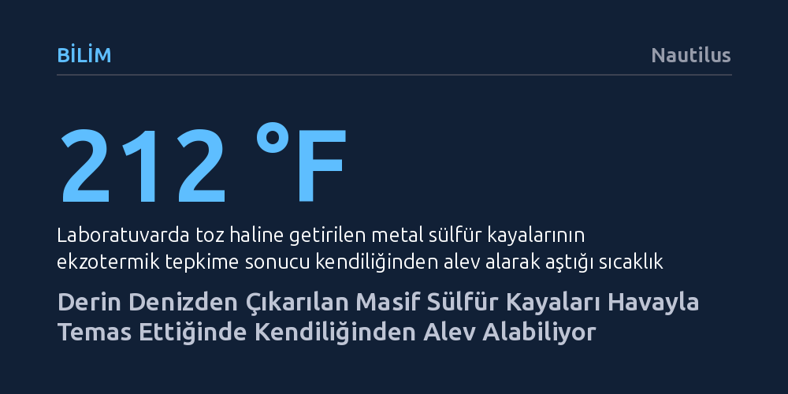

BILIM · Nautilus · 2026-10-14
Okyanus tabanından çıkarılan metal zengini sülfür kayalarının, laboratuvarda havayla temas edince kendiliğinden 100 derecenin üzerine ısınıp alev alabildiği keşfedildi. Kararsız mineral yapısının yol açtığı bu tepkime, derin deniz madenciliğinde gemiler için ani yangın ve patlama riski doğuruyor.
Derin deniz madenciliğinin yalnızca hassas su altı ekosistemlerini değil, yüzeye çıkarılan cevherlerin kararsız kimyasal yapısı nedeniyle maden gemilerini ve çalışanlarını da doğrudan tehdit ettiğini gösteriyor.

Yapay zekâ veri merkezlerinin katlanan enerji talebi ve temiz enerji teknolojilerinin yaygınlaşması, bakır, çinko, altın ve gümüş gibi kritik metallere olan küresel ihtiyacı benzeri görülmemiş bir noktaya taşıdı. Karadaki maden yataklarının giderek tükenmesi, madencilik şirketlerinin ve hükümetlerin gözünü okyanusların binlerce metre altındaki el değmemiş zenginliklere çevirmesine neden oldu. Hidrotermal bacaların çevresinde milyonlarca yılda biriken masif sülfür yatakları, bu metaller açısından muazzam bir rezerv vadediyor.
Uluslararası Deniz Yatağı Otoritesi (ISA), şimdiden iki derin deniz sırtında sülfür madeni arama faaliyetlerine onay vermiş durumda. Ancak bu bölgeler, yalnızca değerli madenleri değil, Dünya üzerinde başka hiçbir yerde yaşamayan son derece hassas ve benzersiz canlı topluluklarını da barındırıyor. Bilim insanları ve çevre örgütleri, ağır madencilik ekipmanlarının bu ekosistemleri geri dönülmez biçimde yok edeceği konusunda uzun süredir uyarılarda bulunuyor. Fakat yeni bir araştırma, tehlikenin yalnızca derin denizdeki canlılarla sınırlı olmadığını; çıkarılmak istenen kayaların bizzat kendisinin ölümcül birer tehdide dönüşebileceğini ortaya koydu.
ABD Jeolojik Araştırmalar Kurumu (USGS) bünyesindeki bilim insanları, 2022 yılında Oregon ve Kaliforniya açıklarındaki Escanaba Çukuru'ndan çıkarılan metal sülfür örneklerini incelemek üzere laboratuvara getirdi. Ancak analiz için toz haline getirilen kayaçlar beklenmedik bir tepki verdi: Numuneler hiçbir harici ısı kaynağı olmadan kendiliğinden ısınmaya başladı ve sıcaklıkları hızla 100 santigrat derecenin (212 Fahrenheit) üzerine çıkarak alev aldı.
Olayın şaşkınlığını yaşayan araştırmacılar, bu ani tutuşmanın arkasındaki kimyasal ve fiziksel mekanizmayı aydınlatmak için kapsamlı bir analiz başlattı. İncelenen örneklerin, bir demir sülfür türü olan nanokristal yapıdaki 'markazit' mineralinden oluştuğu belirlendi. Normal koşullarda kararlı kabul edilen kristal yapılar, deniz tabanından çıkarılan bu taşlarda hafif bir sapma göstererek termodinamik açıdan dengesiz bir biçim almıştı. Ufalanarak yüzey alanı genişleyen mineraller atmosferdeki oksijenle temas ettiğinde, şiddetli bir ekzotermik reaksiyon başlatıp yoğun ısı açığa çıkarıyordu.
Elde edilen bulgular, deniz tabanından metal çıkarmanın karadaki geleneksel madencilikten çok daha tehlikeli ve öngörülemez olduğunu gösteriyor. Karada işletilen sülfür yatakları aslında milyonlarca yıl önce deniz tabanında oluşmuş ve zamanla tektonik hareketlerle yüzeye çıkmış jeolojik formasyonlardır; bu yapılar açık havada uzun süre kalarak kimyasal açıdan dengelenmiş ve kararlılık kazanmıştır.
Buna karşın okyanusun derinliklerindeki yüksek basınç, sıfır oksijen ve dondurucu soğukta varlığını sürdüren taze sülfür cevherleri, yüzeye çıkarıldıklarında köklü bir ortam değişimine maruz kalıyor. Ani sıcaklık artışı, düşen basınç ve bol oksijenli atmosfer ortamı, kristal yapıların hızla çözünerek reaksiyona girmesini tetikliyor. Araştırmacılar raporda, "Ekzotermik reaksiyonlarla ısı üretimi deniz tabanı masif sülfür yataklarında daha önce incelenmemişti; oysa bu durum gemilerde ani yangınlara yol açma potansiyeline sahip" uyarısında bulunarak maden taşıyan kargo gemilerinin ciddi bir felaket riskiyle yüzleşebileceğine dikkat çekiyor.
Araştırma ekibi, her deniz tabanı yatağının aynı mineralojik özelliklere sahip olmadığını ve her bölgenin kendine has jeokimyasal sürprizler barındırabileceğini vurguluyor. Bu durum, ticari madencilik operasyonları başlamadan önce her bir sahadan çıkarılacak örneklerin ayrıntılı biçimde incelenmesini ve kimyasal kararlılıklarının titizlikle test edilmesini zorunlu kılıyor.
Derin deniz madenciliği savunucuları genellikle yeşil dönüşüm ve teknolojik ilerleme için bu minerallerin zorunlu olduğunu öne sürse de, ortaya çıkan son veriler madenciliğin yalnızca çevresel bir felaket değil, aynı zamanda operasyonel bir kabus olabileceğini kanıtlıyor. Okyanus tabanındaki narin ekosistemler devasa kazıcılara ve emiş borularına karşı direnç gösteremeyebilir; ancak yüzeye çıkarıldığında infilak eden kayalar, insanın doğayı dizginleme hırsına kimyanın kurallarıyla beklenmedik bir set çekiyor.